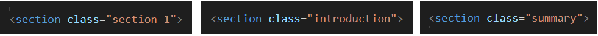
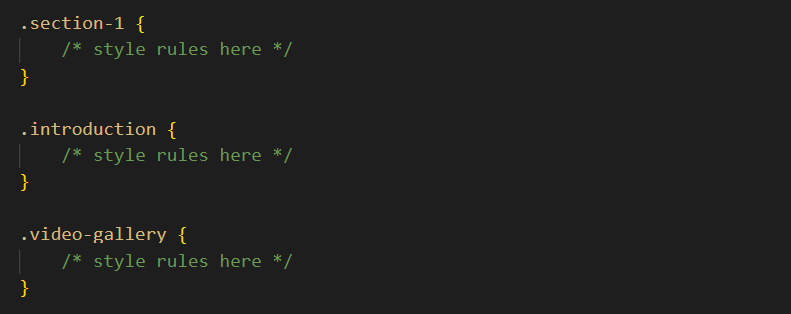
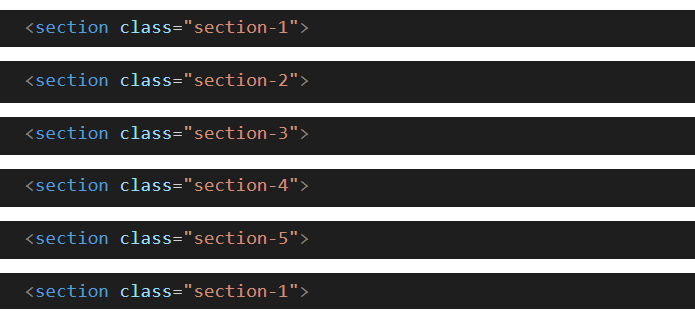
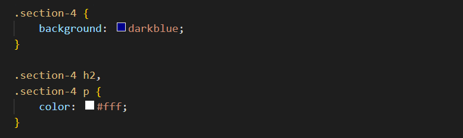
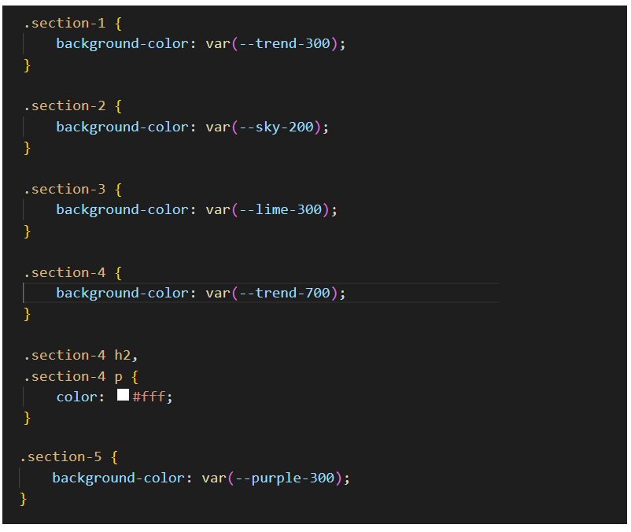

Learning Goals
At the end of this Tutorial, you will be able to:
- Create and use classes in HTML and CSS.
- Create and use custom properties in HTML and CSS.
About classes and class names
In the sample file page-2.html, you created a web page with a <main> container block and inside that six <section> containers.
You will now assign different text and background colours to the content inside these various <section> elements.
To assign different colours (or other styles) to the content with the same tag (such as <section>), you can use what are called classes of that tag.
You can think of classes as a version of an HTML tag.
In an HTML file, you assign a class to a <section> or other tag by giving it a class name. Below you can see some examples below of class names assigned to opening <section> tags.
Here are the rules about class names:
- Class names are entered within a pair of double quotes ("").

- Class names cannot have a space within them. You can type the hyphen (-) character to join words.

- An element can have more than one class name assigned to it. Separate the different class names with a single space.

- If an element has more than one class name, the order of the names is not important.

In a linked CSS stylesheet, you style rules to an HTML element in the same way as you would with any other CSS selector – but you must begin the selector name with a full stop (.). See the examples below.
Adding colours to your second sample web page
Follow the steps below,
- In VS Code, open your page-2.html web age.
- Add the following class names to the six <section> containers, and save the file.  Note that you apply the same class name to multiple elements in a web page. In this example, both the first and last <section> have the same class name.
- Open your style-2.css stylesheet, create the following CSS class selectors, and apply a different background-color value to each one, and save the file. See the example below.

- If you have applied a dark background colour to any <section>, update the relevant text colours to white to make the text readable. See the example below. 
About custom properties
Custom properties (sometimes referred to as CSS variables) are entities you can create in a CSS stylesheet and then reuse throughout that stylesheet.
- To create a custom property, give it a name as shown in the three examples below:
--max-content-width: 1920px; --spacing-small: 2.5%; --fade-transition-time: 700ms;
As you can see, every custom property name begins with two dashes -- - To use a custom property, enter the var keyword, followed by a parenthesis () containing the name of the custom property. See the examples below.
body { max-width: var(--max-content-width); } header { margin-bottom: var(--spacing-small); } footer { transition-duration: var(--fade-transition-time); }
You can limit the scope of a custom property so that it can apply only to a certain element in a linked HTML file. But, typically, you will want the custom properties you create to be available globally across your linked HTML file.
To do this, enclose your CSS custom properties within the :root pseudo-class as shown below.
:root { --max-content-width: 1920px; --spacing-small: 2.5%; --fade-transition-time: 700ms; }
Colours and custom properties
In visual design, a palette is a collection of selected colours. Modern front-end frameworks typically include a CSS file containing a palette of ready-to-use colours defined as custom variables.
So, instead of entering this background colour in a CSS file:
section { background-color: #ecc94b; }
You would simply type this instead:
section { background-color: var(--yellow-500); }
You can see four examples of such frameworks and their palettes of CSS custom colour variables below.


Adding a colour palette to style-2.css
In this next exercise you will add custom colours to your style-2.css file, and then use these to update the appearance of your page-2.html web page.
- In VS Code, open your style-2.css stylesheet file from your websites/assets/css folder.
- In your web browser, click the following file to open it in a new tab, and select and copy all the text in the file: custom-colors.css
- In your style-2.css stylesheet, click just after the RESETS block, and press the Enter key to open a new, blank line.

- Paste in the contents of the custom-colors.css file, and save style-2.css.
The top part of your stylesheet should now look as shown below.
 All these custom colour properties are now available to the linked web page page-2.html
All these custom colour properties are now available to the linked web page page-2.html - Update the colours for the class selectors, using these custom properties. See the examples below. 
✅ You are now finished working with your page-2.html web page and style-2.css stylesheet.
Uploading your files to GitHub
Your final task is to upload your web pages and stylesheets to your account on GitHub.
- Open a new tab in your web browser and go to GitHub.com. If you are not already signed in to your GitHub account, sign in now.

- On your GitHub home page, click the ‘repo’ that holds your web pages. Its name will look as follows, where username is your chosen username on GitHub.
username.github.io

- On the next GitHub screen displayed, near the right of the screen, you can see a button named Add file. Click on it.

- From the dropdown list displayed, choose the option Upload files.

- In File Explorer (Windows 10) or Finder (Apple Mac), drag-and-drop your 📁 exercises sub-folder to upload it to your repository on GitHub.

- Scroll down to the bottom of the GitHub screen, and accept or edit the short message (Add files via upload) in the Commit changes box.
- Finally, click the green Commit changes button to upload your files.

Your web pages are now published on GitHub at web addresses similar to the following, where username is the username you have chosen for your GitHub account:
https://username.github.io/index.html
– or simply –
https://username.github.io
https://username.github.io/exercises/page-1.html
https://username.github.io/exercises/page-2.html
It may take a few minutes for your uploaded files to appear on GitHub.